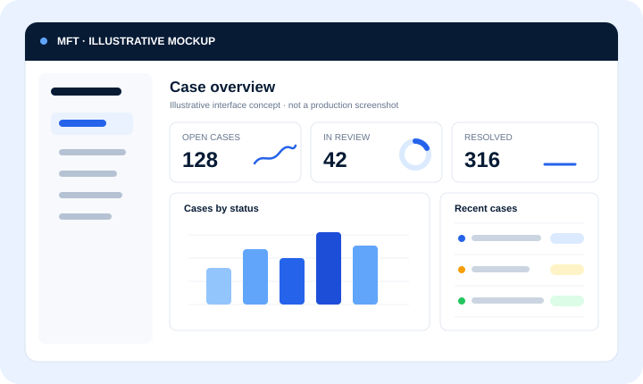

MFT — Mfumo wa Fuatilia Taarifa
Client: Ministry of TEHAMA (Wizara ya Mawasiliano na Teknolojia ya Habari)
The challenge. Government institutions need a reliable way to track citizen-reported issues from submission through resolution, with clear accountability at every step — not just a ticket log, but a system that enforces SLAs and gives oversight staff real visibility into performance.
What we built. A bilingual (Kiswahili/English) platform with real-time SLA monitoring and escalation tracking, a staff performance analytics dashboard, live WebSocket notifications, and server-side role enforcement so access control can't be bypassed from the client. The interface carries Tanzania's Coat of Arms and national color identity.
Stack. Spring Boot 3, Java 17, React 19, MySQL, JWT, WebSocket (STOMP).
Alignment. Built for Dira 2050's Utawala Bora (Good Governance) and Mageuzi ya Kidijitali (Digital Transformation) pillars.
